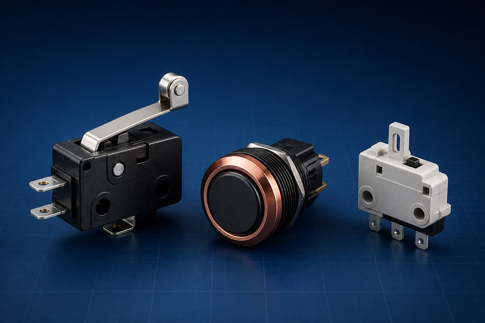
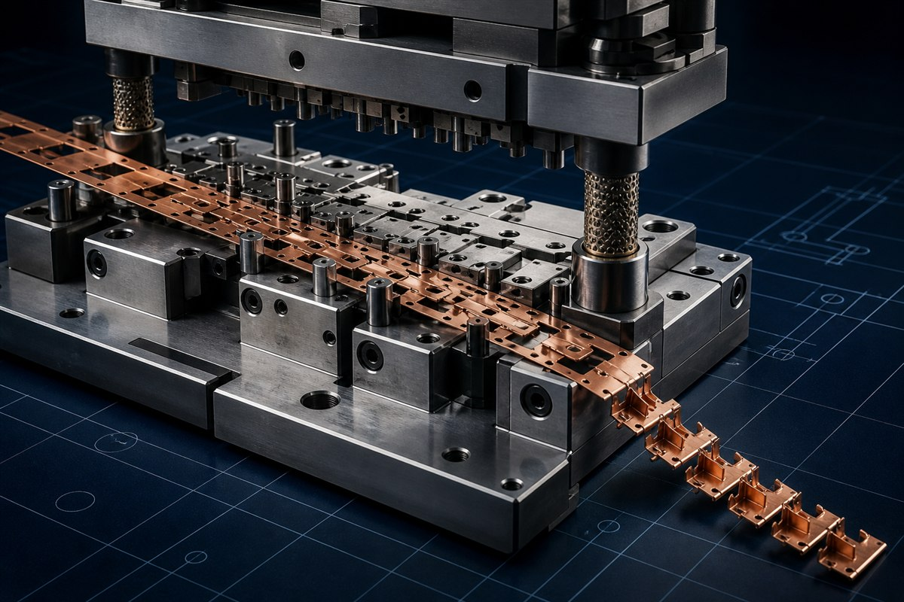

Operator controls
Panel switches
Push-button and selector-switch concepts for machine control panels, with operator style and mounting tailored to the application.
Explore panel switchesBeekay brings precision press-tool and plastic-mould expertise into industrial switch development. Start with an application, drawing or sample; build toward a practical, manufacturable product.
Based in Pavana Industrial Premises, MIDC Bhosari, Pune.

Explore operator controls, position-sensing switches and the precision tooling that supports their development.
Push-button and selector-switch concepts for machine control panels, with operator style and mounting tailored to the application.
Explore panel switchesCompact switch concepts for detecting travel, end positions and mechanical actuation in equipment.
Explore sensing switches
Pressed contacts, terminals and formed parts designed with tooling and repeatable manufacture in mind.
Explore press-tool expertiseImages show illustrative concepts. Product configurations and specifications are confirmed for each development programme.
Contacts, terminals, housings and operators must work together. Beekay’s background in press tools and plastic moulds helps bring manufacturing considerations into switch development early.
Start with the information you have. We will identify what needs to be resolved before a product or tooling commitment is made.
Review the application, interfaces, operating conditions, quantity and target date.
Discuss switch architecture, materials, parts and a practical tooling route.
Plan sample checks for fit and function; ratings and compliance need appropriate testing.
Define the approved configuration, inspection points and supply expectations.
Tell us what it needs to do and where it will be used. Beekay can review the requirement and discuss a suitable development path.